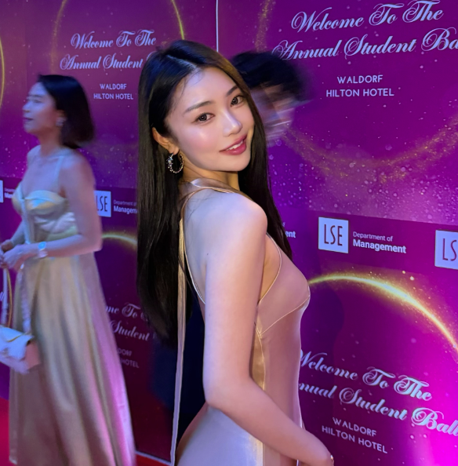

研究 · 工程 · 协作
干将项目团队
连接材料科学、
人工智能与工程实践。
团队依托通用决策智能研究所，汇聚产业研究机构与高校力量，围绕粉末 X 射线衍射，开展物相识别、多相分解与结构精修的科学智能体研究与工程实现。
真实案例可视化；晶体画面为概念示意。探索研究案例 ↗
依托研究机构通用决策智能研究所
材料科学/人工智能/工程实践
01 / PROJECT LEAD
项目负责人
连接研究问题与项目实践。
02 / CORE CONTRIBUTORS
核心成员
共同构建干将的研究与分析能力。
周辉池Huichi Zhou
伦敦大学学院（UCL）
杨润雨Runyu Yang
通用决策智能研究所
李劲松Jingsong Li
通用决策智能研究所
孙树辰Shuchen Sun
香港科技大学（广州）
03 / ACADEMIC ADVISORS
学术指导专家
以学术视野，支持持续探索。
04 / TECHNICAL SUPPORT
技术支持
让研究能力走向可用的工具。
沈彦融YanRong Shen
通用决策智能研究所
孙纯阳Chunyang Sun
通用决策智能研究所
王逸之Yuchi Wang
通用决策智能研究所
余忠蔚Zhongwei Yu
香港科技大学（广州）
05 / OPERATIONS & SALES
运营和销售
连接项目进展、用户与合作机会。

销售负责人
顾文涵Wenhan Gu
通用决策智能研究所